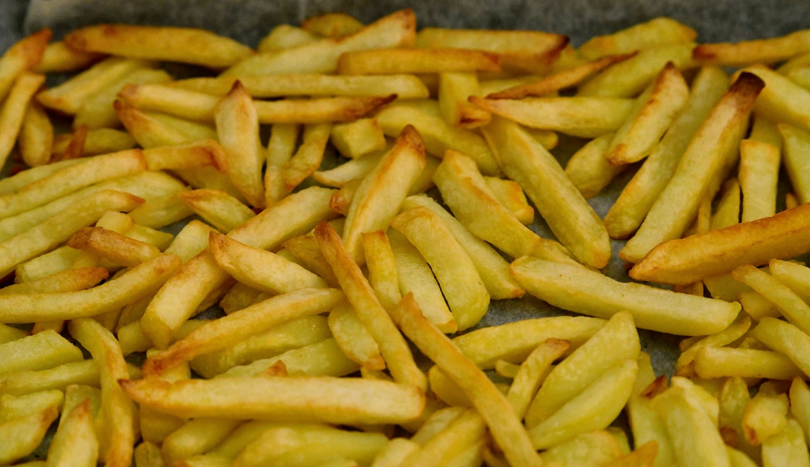

Homepage
Potato Fritters

Description
Potato fritters are crispy, golden-brown snacks made from grated potatoes,
mixed with seasonings and fried to perfection. They are perfect as a side dish or a
tasty appetizer.
Ingredients
- 4 large potatoes, peeled and grated
- 1 small onion, finely chopped
- 2 eggs, beaten
- 1/4 cup all-purpose flour
- Salt and pepper to taste
- Vegetable oil for frying
Instructions
- Place the grated potatoes in a clean kitchen towel and squeeze out excess moisture.
- In a large bowl, combine the grated potatoes, chopped onion, beaten eggs, flour, salt, and pepper. Mix well.
- Heat vegetable oil in a large skillet over medium-high heat.
- Scoop about 2 tablespoons of the potato mixture and flatten it into a patty. Carefully place it in the hot oil.
- Fry the fritters for about 3-4 minutes on each side, or until golden brown and crispy.
- Remove the fritters from the oil and drain on paper towels.
- Serve hot with your favorite dipping sauce.